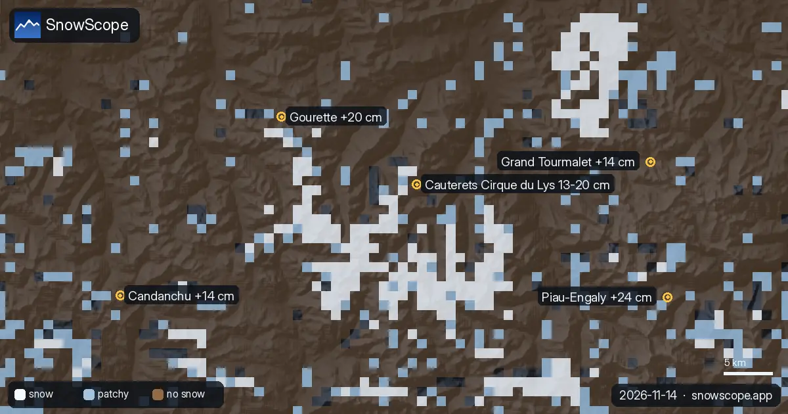

Équipement de ski pour Cauterets Cirque du Lys aujourd'hui dans les Pyrénées : prêt pour poudreuse fraîche (15 novembre)
Lisez la neige du jour dans les Pyrénées et vous obtenez poudreuse fraîche, neige fine de début de saison et de l'air doux qui peut laisser une croûte. Voici donc la liste de matériel, station par station, et quand sortir. Le terrain en montagne sèche apprend une chose : la carte est un début, la pente a le dernier mot.
Consultez les prévisions neige en temps réel pour Les Angles sur l'application SnowScopeHauteurs de neige, alertes poudreuse et carte 3D, gratuitement.À quoi ressemble la neige aujourd'hui
Poudreuse fraîche (20 cm ou plus en 72 heures) : Cauterets Cirque du Lys (+22 cm).
Neige fine de début de saison (haut du domaine sous 30 cm) : Les Angles (17 cm), Saint-Lary (15 cm) et Gourette (11 cm).
De l'air doux qui peut laisser une croûte (limite pluie-neige au-dessus du sommet un jour doux, sans beaucoup de neige fraîche) : Les Angles, Saint-Lary et Gourette.
| Station | Hauteur de neige | Neige fraîche, 72 h | Attendu, jours suivants | Sommet |
|---|---|---|---|---|
| Les Angles | 17 cm | 2 cm | 0 cm | 2 358 m |
| Saint-Lary | 15 cm | 10 cm | 0 cm | 2 462 m |
| Gourette | 11 cm | 18 cm | 2 cm | 2 453 m |
| Cauterets Cirque du Lys | 9 cm | 22 cm | 3 cm | 2 420 m |
| Candanchu | 8 cm | 19 cm | 2 cm | 2 238 m |

Le meilleur moment et le meilleur endroit
Le plan, c'est la première remontée, et en hors-piste les premiers jours après une chute sont ceux qui demandent le plus de prudence.
Cherchez les pistes les plus hautes orientées au nord : c'est là que la neige est la meilleure.
Montez : les pentes du haut gardent l'air le plus froid.
Ce que nous emporterions
Matériel poudreuse : skis larges ou planche, un écran pour lumière plate et de quoi se couvrir le cou.
Prenez vos vieux skis, ou louez : neige fine veut dire cailloux, et des carres affûtées aident sur les parties dures et raclées. Restez sur les pistes damées.
Veste de pluie pour les heures humides, puis croûte dure après le regel : carres, casque, pistes damées.
Station par station
Les Angles (sommet 2 358 m) : autour de 17 cm en altitude, 2 cm de neige fraîche en 72 heures et 0 cm prévus ces prochains jours, et l'isotherme 0 °C varie entre 2 370 m et 4 080 m.
À Saint-Lary (sommet 2 462 m), il y a environ 15 cm en haut du domaine, avec 10 cm de neige fraîche en 72 heures et 0 cm encore à venir, et l'isotherme 0 °C varie entre 2 410 m et 3 850 m.
Gourette (sommet 2 453 m) : autour de 11 cm en altitude, 18 cm de neige fraîche en 72 heures et 2 cm prévus ces prochains jours, et l'isotherme 0 °C varie entre 2 340 m et 3 780 m.
À Cauterets Cirque du Lys (sommet 2 420 m), il y a environ 9 cm en haut du domaine, avec 22 cm de neige fraîche en 72 heures et 3 cm encore à venir, et l'isotherme 0 °C varie entre 2 400 m et 3 680 m.
Candanchu (sommet 2 238 m) : autour de 8 cm en altitude, 19 cm de neige fraîche en 72 heures et 2 cm prévus ces prochains jours, et l'isotherme 0 °C varie entre 2 180 m et 3 650 m.
Matériel de sécurité hors-piste
Hors des pistes damées, emportez un détecteur de victimes d'avalanche, une pelle et une sonde, sachez vous en servir et ne partez jamais seul. Lisez d'abord le bulletin d'avalanche officiel.
Conseils aux skieurs
- Si vos skis ne sont pas prêts, louez ou faites-les entretenir dans la vallée : les magasins locaux préparent les carres pour la neige du jour.
- De la neige sur la carte ne veut pas dire que la station est ouverte : vérifiez remontées et dates sur son site.
- Avant toute sortie hors-piste ou en randonnée, lisez le bulletin d'avalanche officiel (liens ci-dessous).
- L'isotherme 0 °C est une prévision avec une erreur de plusieurs centaines de mètres : revoyez la carte la veille.
À propos de ces chiffres
Les hauteurs de neige des stations sont la neige la plus épaisse sur le haut du domaine, d'après le modèle de neige SnowScope (environ 1 km, calcul du 15 novembre) ; ce sont des estimations pour une zone, pas une mesure en un point. Les valeurs des stations de mesure sont mesurées à la date indiquée. Les prévisions peuvent changer. Consultez toujours le bulletin d'avalanche officiel avant le hors-piste.
Bulletins d'avalanche officiels: Météo-France / Meteocat / AEMET
Citer ce bulletin
Pour la recherche, l'enseignement ou la presse : chiffres et graphiques réutilisables librement sous CC BY 4.0 avec cette citation.
SnowScope (2026), Équipement de ski pour Cauterets Cirque du Lys aujourd'hui dans les Pyrénées : prêt pour poudreuse fraîche (15 novembre), https://snowscope.app/blog/fr/2026/11/pyrenees-what-to-bring-ski-gear-conditions-15-november-2026.html, consulté le 2026-11-15
SnowScope (Atlas Labs). (2026, November 15). Équipement de ski pour Cauterets Cirque du Lys aujourd'hui dans les Pyrénées : prêt pour poudreuse fraîche (15 novembre). SnowScope snow reports. https://snowscope.app/blog/fr/2026/11/pyrenees-what-to-bring-ski-gear-conditions-15-november-2026.html
BibTeX
@misc{snowscope2026pyreneeswhattobringskige,
author = {{SnowScope (Atlas Labs)}},
title = {Équipement de ski pour Cauterets Cirque du Lys aujourd'hui dans les Pyrénées : prêt pour poudreuse fraîche (15 novembre)},
year = {2026},
month = nov,
howpublished = {\url{https://snowscope.app/blog/fr/2026/11/pyrenees-what-to-bring-ski-gear-conditions-15-november-2026.html}},
note = {Published 2026-11-15 17:48 UTC; accessed 2026-11-15}
}· CC BY 4.0 · Méthodes, données et outils →
Les Angles : neige et température selon l'altitude, cet hiver vs l'hiver dernier (outils) →
Suivre Les Angles
Gratuit : un message quand la neige arrive, et la météo chaque matin.
Autres bulletins neige

Surface enneigée : 910 km² le 12 novembre, 1 100 km² aujourd'hui, 640 km² prévus le 17 novembre. À suivre. Pluie et neige mêlées : la neige n'est …

Bulletin neige dans les Pyrénées, 12 novembre. D'ici le 15 novembre, la prévision apporte 33 cm à Cauterets Cirque du Lys, 29 cm à Piau-Engaly et …

Nous avons comparé la neige du jour dans 4 stations dans les Pyrénées avec la même date lors de chacun des 46 hivers passés. 1 sont nettement …